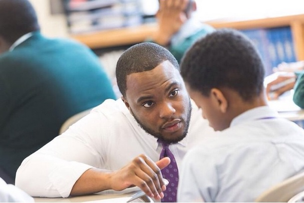
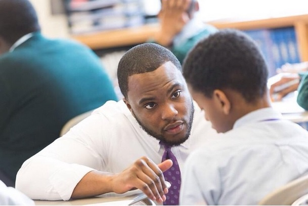
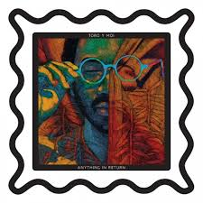
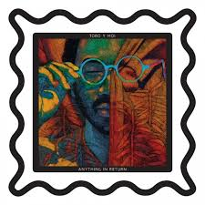
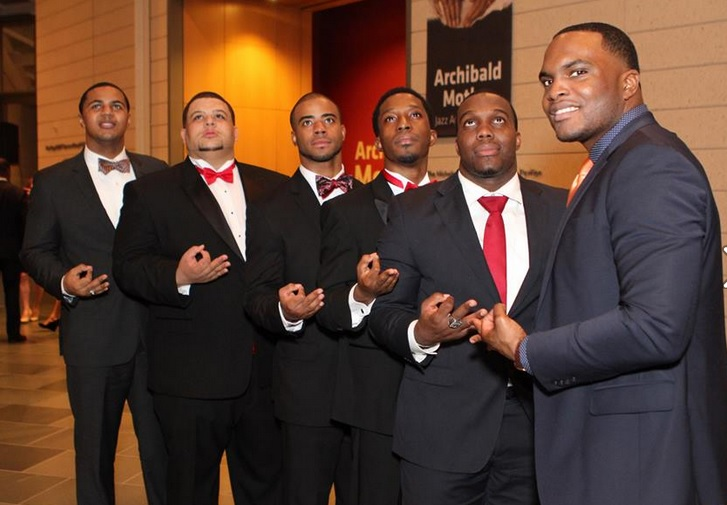
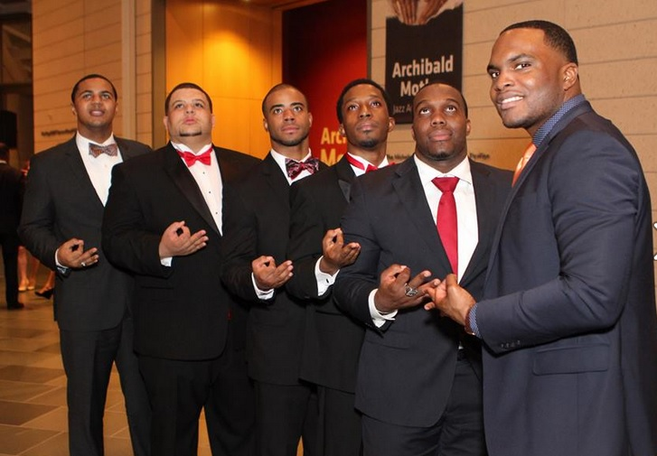

Killer Mike kills the mic.
As a hip-hop evangelist, nothing gets under my skin more than uneducated outsiders using the genre as a scapegoat for all of the systemic challenges faced by the black community. While there are artists whose lyrics are violent, mysogynistic, and self-defeating, believe it or not, these artist do NOT make up the majority of the hip-hop community, even if many of them dominate the airwaves. At its core, hip-hop is pure creative expression born out of struggle. At its core, hip-hop is thoughtful, reflective, poetic, and empowering. That's what it was meant to be from its inception. Check out Killer Mike breakdown its history in the clip below. (Skip straight to 10:00 for Mike's hip-hop analysis)
Why We Teach Code by Reuben Ogbonna
In 2012, tech blogger and entrepreneur Jeff Atwood spoke out against the increasing number of Americans taking an interest in computer programming. He authored a post entitled, “Please Don’t Learn to Code” in which he lists a number of reasons why more code-literate Americans do not make for a better workforce or society. Of the many logical flaws present in his article, the one that stands out the most is his argument that the “’everyone should learn to code’ movement… puts the method before the problem.” He argues that before a person learns to code, he should first determine the problem he wishes to solve with code. While this argument may hold true for some, we should be thankful that schools do not operate under this philosophy. According to this logic, we would allow students to choose which books they would like to read before we ever taught them how. In Atwood’s world, students would have to commit to a pre-medical career track before they were allowed to take courses in biology and chemistry.
These examples are laughable for the exact same reasons Atwood’s argument is: we teach students essential life skills BEFORE they encounter critical problems so that they are equipped to handle them when they do arise. Moreover, it is during the learning process that we actually discover many of the problems that we might, one day, work to solve. If a student waited until he developed a passion for aeronautics in college to begin learning foundational math, the daunting task of learning algebra, trigonometry, calculus, etc. would undoubtedly discourage that student from ever pursuing it as a career. Moreover, if a student never took the time to engage with higher level mathematics, he likely would never have an opportunity to develop such a passion to begin with. In the same vein, it was David Karp’s study of HTML at age 11 that eventually led him down the path to creating Tumblr and becoming the multimillionaire tech entrepreneur that he is today. If he waited until he stumbled upon the idea to begin learning to code, then the site, as we know it, would likely not exist.
I am an 8th grade math teacher at an all-boys school in Brooklyn, NY. I chose this path because I wanted to empower young men of color to become world leaders and problem solvers. Although only teenagers, my boys have brilliant ideas that I believe could transform their communities. In addition to mathematics, literacy, and leadership development, code literacy could be the lever that helps to bring these ideas into fruition. Thus, in addition to my numerous responsibilities as a teacher, I am learning to code (and to teach code) through the Flatiron School Computer Science Education Fellowship so that I may better equip my young boys to be change agents for their communities and for the world.


 

 



 
